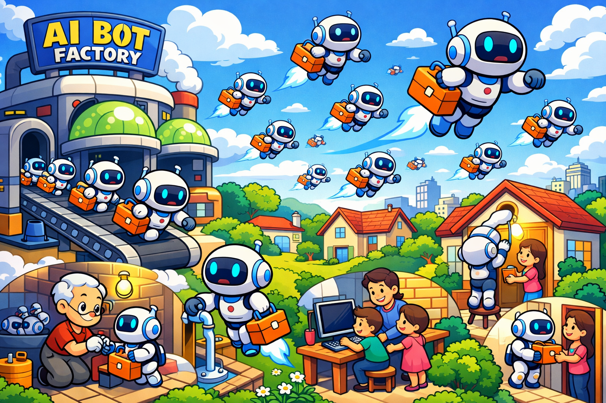

Personal Blog
Technical articles, tutorials, and thoughts on software development
Visit BlogDeveloper & Researcher
Building stuffs that matter, learning every day
Open source contributions and experiments

InfoMosaic-Bench: Evaluating Multi-Source Information Seeking in Tool-Augmented Agents.
View ProjectA General, Accurate, Long-Horizon, and Efficient Mobile Agent driven by Multimodal Foundation Models
View Project
IntelliSearch V3.1: Unifying Search, Empowering Action for tool calling autonomous agents.
View Project
[Course-Project AI1811] E³-ML-Master: Advanced Envisioning-Executing for Goal-Driven Self-Evolved ML-Master.
[Course-Project AI1811] LLM Reasoning: Enhancing Reasoning Abilities for LLMs using Reinforcement Learning
[Course-Project AI1811] Clustering of High-Dimensional Data with Intrinsic Low Rank
[Course-Project AI1807] Two-Dimensional Image Scaling Methods Based on Classical Interpolation Algorithms and Their Extensions
GPUSentry: a command-line tool for monitoring GPU status in real-time.
PaperPulse: Your Daily Latest Paper Acquisition Assistant, automatically pushing trending papers and Github repos with AI summary.
ProbeCode: AI coding agent integrating static code inspection with a ReAct framework to understand and memorize long-context code.
Repo Code Line Counter: a CLI tool counting the number of code lines in a repository, with options to ignore specific folders and filter by file extensions.
Automated GPU monitoring with Feishu notifications
Rust implementation of grep utility
Tools to generate requirements.txt for Python Project
A simple application for blog content retrieval implemented using RAG as the core technology.
Sharing knowledge, building connections
Continuous learning and knowledge accumulation